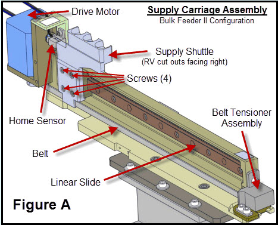
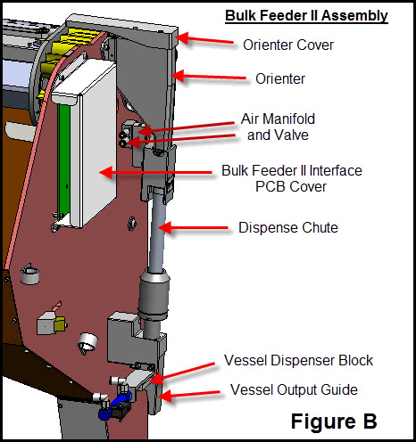
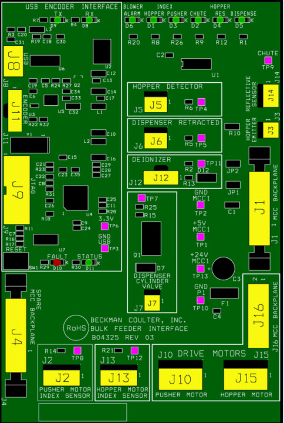
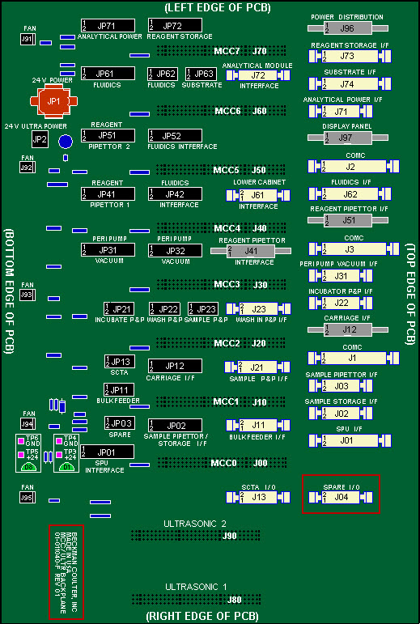
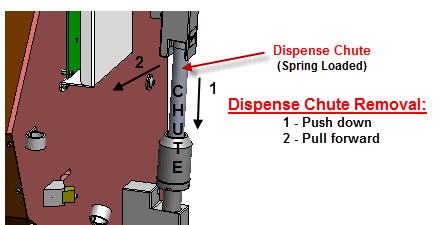

Installing Bulk Feeder II
This procedure describes how to install the bulk feeder II module.
Requirements
The following items are required for bulk feeder II operation:
- System software version 5.0 or higher.
- Supply carriage assembly with linear slide. Refer to Figure A.
- Supply shuttle with RV opening cutouts on the right side. Refer to Figure A.
- Backplane PCB configuration F or higher (includes SPARE I/O Connection - J04 in the upper right corner of the board). Refer to Figure D.
Caution:
- Review the required parts tables. Depending on the parts replaced since manufacturing, determine the current configuration before you begin this procedure.
- When considering a bulk feeder II installation in DxI 800 instruments with serial number below 600781, contact Technical Support. These systems also require installation of a new backplane. Other options are strongly recommended.
| Part Description | Part Number | Serial# 600781 to 603423 | Serial# 603424 to 603853 |
|---|---|---|---|
| Bulk Feeder Module Kit | B45307 | Required | Required |
| Software Version 5.0 or Higher | N/A | Required | Required |
| Supply Carriage Assembly Kit | B45306 | Required | Not Required |
| Supply Shuttle | B22654 | Not Required | Required |
| Part Description | Part Number | Serial# 900000 to 900769 | Serial# 900770 to 900910 |
|---|---|---|---|
| Bulk Feeder Module Kit | B45307 | Required | Required |
| Software Version 5.0 or Higher | N/A | Required | Required |
| Supply Carriage Assembly Kit | B45306 | Required | Not Required |
| Supply Shuttle | B22654 | Not Required | Required |
Note:
- All DxI 600 instruments have been manufactured with the configuration F or higher backplane PCB that is required for the bulk feeder II module.
- DxI 800 instruments starting at serial number 600781 were manufactured with the configuration F or higher backplane PCB that is required for the bulk feeder II module.
- The latest supply carriage assembly (P/N B45306 shown in Figure A) includes the supply shuttle (P/N B22654) that is required for the bulk feeder II module (RV cut outs facing right).
- A population of DxI instruments has the latest version of the supply carriage assembly, but has a version of the supply shuttle that was made for the original bulk feeder (RV cut outs facing left). In this case, you only replace the supply shuttle. Refer to the last column in the required parts tables.
- Bulk feeder II cut-in serial numbers are 603854 for DxI 800 and 900911 for DxI 600.





-
Remove the bulk feeder module and install the required parts before installing the bulk feeder II module.
- Verify system software version 5.0 or higher has been installed.
-
Remove the bulk feeder.
Note: Refer to the BF: Removing Bulk Vessel Feeder procedure.
- Ensure that the upper switch on the Power Distribution PCB is in the off position.
- Remove the bulk feeder upper support bracket and screws from the instrument and discard the bracket and screws.
-
If necessary, replace the supply carriage with the Supply Carriage Assembly Kit (B45306). Refer to the required parts table. Refer to Figure A.
Note: To remove and install the supply carriages, refer to the CA: Removing Sample or Reagent Carriage and CA: Installing Sample or Reagent Carriage procedures.
-
If necessary, replace the supply shuttle (B22654). Refer to the required parts table. Refer to Figure A.
Note: The supply shuttle is the part of the supply carriage assembly that holds the RVs. Four screws hold the supply shuttle onto the supply carriage.
-
If necessary, replace the backplane PCB. Refer to Requirements section. Refer to Figure D.
Caution: If replacing the backplane PCB, ensure the upper switch on the Power Distribution PCB is in the off position.When replacing the backplane PCB:
- Ensure the upper switch on the Power Distribution PCB is in the off position.
- Remove the back side venting panel of the upper right cover to access to the backplane PCB.
- Label all cabling to the backplane to ensure reconnections are correct.
-
Install the bulk feeder II module.
- Install the new upper support bracket (B06842) into the instrument frame using the two 3/8-in screws provided in the kit. Leave the screws slightly loose. The screws are tightened after the bulk feeder module is installed.
- Lift the new bulk feeder II module into position in the instrument.
-
Slide the module rearward until:
- Rear 'foot' is securely and completely under the hold down bracket.
- Front locating pin is positioned inside the second hole from the front of the foot.
- Insert and tighten the large cap screw and washer at the front bottom of the bulk feeder module. The cap screw and washer are provided in the kit.
-
Remove the two countersunk screws from the orienter cover and remove the cover.

-
Remove the upper left card cage cover to create more working space for the steps that follow.
Caution: Components in the upper left card cage are powered on.
-
Adjust the newly installed upper support bracket until the left surface of the bracket rests on the right surface of the bulk feeder. Completely tighten the support bracket screws to the instrument frame.
Note: The right screw can be accessed using an extender bar from an angle to the right of the orienter.
-
Install and tighten the two 1/4 -in screws (provided in kit) that attach the upper support bracket to the bulk feeder module.
Note:
- The ability to install these screws can be improved by using an extender bar coming in from the right side of the module just behind the orienter.
- Placing Parafilm on the ball end of the Allen tool helps to maintain a grip on the screw until it catches threading.
-
Reinstall the orienter cover.
Caution: The orienter cover is critical for bulk feeder II operation. Always ensure that the orienter cover and screws are installed before general operation.
- Reinstall the upper left card cage cover.
-
Prepare the bulk feeder II module for new cabling.
-
Remove the bulk feeder dispense chute by pushing down on the narrow metal part of the chute and then pulling the top end of the chute forward.

- Remove the bulk feeder II interface PCB cover and set the cover and the four screws aside. Refer to Figure B.
-
Remove the sample pump from the instrument to ensure easier access to the external USB ports on the right side of the CPU.
Note: Refer to the Fluidics: Removing Precision or Sample Pump procedure.
-
Remove the bulk feeder dispense chute by pushing down on the narrow metal part of the chute and then pulling the top end of the chute forward.
-
Install and route the bulk feeder II module cabling.
-
Identify the version of the CPU PCB and the USB port numbering configuration. Refer to the
Drawing - PCB - CPU document.
- Advantech and Rocky CPU boards use the USB2 port.
Note: These PCBs support the AU hard drive with older Windows XP image.
- Atom CPU boards use the USB4 port.
Note: This PCB supports the AU hard drive with the latest Windows XP and Windows 8 images.
- Advantech and Rocky CPU boards use the USB2 port.
-
Install the USB cable (B29432) (provided in the kit).
- The mini USB connector plugs into J8 on the Bulk Feeder Interface PCB. Refer to Figure C.
- Route the cable under the orienter and through the harness clamp and then up to the external USB connections on the CPU board.
- The USB connector plugs into the appropriate USB port on the CPU board as determined in the previous step.
- Tie wrap any excess USB cable and situate it between the card cage and the fluidics manifold.
Note: The harness clamp is located just behind the orienter on the bulk feeder side plate. -
Reinstall the sample pump.
Note: Refer to the Fluidics: Installing Precision or Sample Pump procedure.
-
Move the power harness end into the cable tunnel to an area where the harness does not interfere with instrument function. This cable is not be used.
Note: Do not remove the power harness from the instrument, in case the original bulk feeder must be reinstalled.
- Route the ribbon cable through the harness clamp and plug the connector into J1 on the bulk feeder interface PCB. Refer to Figure C.
-
Install and route the new ribbon cable (B29433) provided in the kit from J4 on the bulk feeder interface PCB (refer to Figure C) through the harness clamp toward the back of the instrument.
Note: The bulk feeder II module uses two ribbon cables.
- Install and route the new power harness (B26931) provided in the kit from J16 on the bulk feeder interface PCB (refer to Figure C) through the harness clamp toward the back of the instrument.
-
From the back of the instrument, route the new ribbon cable and the new power harness through the cable tunnel to the backplane PCB.
Important: When completing this step, ensure any excess slack in the cabling is secured within the cable tunnel or by using available harness clamps or tie-wraps.
- Plug the new ribbon cable into J04 (labeled SPARE I/O) on the backplane PCB. Refer to Figure D.
- Remove the power harness connector from JP11 (labeled BULK FEEDER). This cable is not used and can remain in the instrument.
- Plug the four-wire connector of the new power harness into the JP03 (labeled SPARE) and the six-wire connector of the new power harness into JP11 (labeled BULK FEEDER) on the backplane PCB. Refer to Figure D.
-
From the back of the instrument, attach the main air supply tubing to the air manifold of the bulk feeder II module by inserting the tubing into the fitting and then lightly pulling on it to ensure it is secured in position.
Note:
- The air manifold/valve is located behind the orienter on the bulk feeder side plate. Refer to Figure B.
- If the tubing does not seat securely in the fitting, clip off a short amount of the tubing to create a new, smooth surface for insertion into the fitting.
- Reinstall the bulk feeder II interface PCB cover.
-
Reinstall the dispense chute.
Caution: Make sure the dispense chute snaps securely in position.
- Place the dispense chute bottom into position on top of the vessel dispenser.
- Press down on the narrow metal part of the dispense chute and insert chute into the position under the orienter. Refer to Figure B.
-
Move the upper switch on the Power Distribution PCB to the on position. Wait for the instrument to complete or fail initialization to proceed.
Note: Initialization fails if installing a new supply carriage assembly or a supply shuttle because of the new orientation of the supply shuttle.
-
Identify the version of the CPU PCB and the USB port numbering configuration. Refer to the
Drawing - PCB - CPU document.
-
Configure the AU software settings for the bulk feeder II operation.
Warning:
- Use extreme care when entering new software settings in the specific.ini file. Double-check the accuracy of what is entered including the spacing. Do not press the [Enter] key after changing a value.
- Best practice is to place the cursor to the right of the parameter to be changed and then use the [Backspace] key to erase the parameter before typing in the new setting. Use the mouse to move the cursor to the next setting.
For Windows XP System with Software 5.2 and below:
- Press Windows key, select Programs > Administrative Tools > Remote Desktop Connection to AU PC.
-
Right-click on the AU Object icon (small Y-shaped icon) in the task bar at the bottom right corner of the screen, and then select
Exit.
Note: It might be necessary to use the scroll bars to locate the AU Object icon on the task bar of the screen.
-
From the AU screen, select
My Computer > AU_PC (C:) > AU.
Note: If AU_PC (C:) is not available, select Local Disk (C:) instead and use Local Disk (C:) throughout this section instead of AU_PC (C:).
- Scroll down to the specific.ini file, right-click on it and select Copy.
-
Right-click on AU_PC (C:), and select
Paste.
Note: A copy of the specific.ini file is now located on the AU_PC (C:) drive.
- Go back to the AU folder and select the specific.ini file.
- Select Edit > Find and enter System Enhancements into the Find what: box. Select Find Next to search the specific.ini file.
- Under the [System Enhancement] heading, change the RV Supply parameter to 1 (RV Supply=1).
- Enter [RVSupply] into the Find what: box, and select Find Next to search the specific.ini file.
-
Under the [RVSupply] heading, verify that the parameters match the following text:
- Mechanical Revision=1
- IndexOffset=30
- Always Fire Both Ejectors=no
- Use Encoders=yes
- PushPhase1Steps=690
- Verbosity=1
- DebugLogging=no
-
Enter
MFGAlignmentsDone in the Find what: box, and select
Find Next to search the specific.ini file. Change the parameter to
No (MFGAlignmentsDone=no).
Note:
- This parameter change is for the benefit of the Alignments and Verification section.
- Below the title on the Main Menu screen, the phrase Manufacturing Not Aligned is displayed in red text.
- Save any changes by selecting File > Save. Select the X in the upper right corner of the window to close the specific.ini file.
-
Load the driver for the USB.
- From the AU screen, select My Computer > AU_PC (C:) > WINDOWS > system32 > DRVSTORE.
- Select the DPInst.exe file to load it.
- Select the X in the upper right corner of the window to close the DRVSTORE file.
-
Double-click the large
AU Object Icon on the desktop to relaunch the AU Object.
Note: If the AU Object fails to launch, then you may need to enable the USB controller in the CMOS setup. Follow these steps to do so.
- Connect the Monitor, Mouse, and Keyboard to the instrument.
Note: There is a coil of cables on the rear of the Upper Left Card Cage that the Monitor, Mouse, and Keyboard connect to. The keyboard connector is labeled "K" and the Mouse connector is labeled "M".
- Restart the AU computer. Select
Start > Shut Down > Restart the Computer to restart the instrument software.
Note: The latest AU hard drive with Windows XP image does not have the restart or shut down option. Use command prompt application to restart the AU computer.
- Select Start > Run.
- Enter cmd and select OK.
- Type shutdown.exe /r /t 00 and hit Enter to restart the AU computer.
Note: If the Mouse and/or Keyboard does not respond, then reboot the instrument manually to reset the devices. - Press and release the [Delete] key while the instrument is doing the memory check to enter the CMOS setup screen.
- Select Integrated Peripherals and press Enter
- Select USB Controller and press Enter
- Select Enabled and press Enter
- Select
F10 Save to CMOS and Exit (Y/N) Y and press
Enter
Note: Upon completion of this step the instrument will reboot. Ignore or cancel any "Found new hardware" pop-ups or other error messages.
- Connect the Monitor, Mouse, and Keyboard to the instrument.
- Select the X in the upper right corner of the window to close the Remote Desktop Connection to the instrument.
For Windows 8 System with Software 5.3.1 and above:
Note: DxI Software 5.3.1 is compatible with Windows XP console PC. If the software was installed on the Windows XP console PC, then follow the Windows XP section to configure the AU software settings.-
Open a remote desktop connection to the AU.
- Press the Windows key, select Remote Desktop Connection icon or type remote and open the Remote Desktop Connection program.
- Type 192.168.2.4 into the Computer field and select Connect.
- Enter user for the User Name and tech for the password if prompted.
- If prompted at the RDS warning screen, check the box for "Don't ask me again for connections to this computer" and select
Yes.
Note: For Windows 8, the default console IP address is 192.168.2.3 and the AU IP address is 192.168.2.4. Neither IP address changes during the software load process.
-
Shut down the AU Object program.
- Right click on the task bar and select Task Manager.
- In the Task Manager box, click on Processes, select AUobj Module, and click on End Task in the bottom corner of the box.
-
In the AU desktop, find the specific.ini file and make a copy of the file.
- Double click on Computer or File Explore and select Local C: drive or AU_PC (C:) > AU > specific.ini, right-click on the specific.ini file, and then select Copy.
- Right-click Local C: Drive or AU_PC(C:), and then select Paste. A copy of the specific.ini file is placed on AU_PC(C:).
- Double click on the specific.ini file to open the file in Notepad program.
- Select Edit > Find and enter System Enhancements into the Find what: box. Select Find Next to search the specific.ini file.
- Under the [System Enhancement] heading, change the RV Supply parameter to 1 (RV Supply=1).
- Enter [RVSupply] into the Find what: box, and select Find Next to search the specific.ini file.
-
Under the [RVSupply] heading, verify that the parameters match the following text:
- Mechanical Revision=1
- IndexOffset=30
- Always Fire Both Ejectors=no
- Use Encoders=yes
- PushPhase1Steps=690
- Verbosity=1
- DebugLogging=no
-
Enter
MFGAlignmentsDone in the Find what: box, and select
Find Next to search the specific.ini file. Change the parameter to
No (MFGAlignmentsDone=no).
Note:
- This parameter change is for the benefit of the Alignments and Verification section.
- Below the title on the Main Menu screen, the phrase Manufacturing Not Aligned is displayed in red text.
- Save any changes by selecting File > Save. Select the X in the upper right corner of the window to close the specific.ini file.
-
Load the driver for the USB.
- Select Computer > Local Disk (C:) or AU_PC (C:) > Windows > System 32 > DRVStore, and then double-click DPInst.exe.
- Exit DRVStore explorer window when complete.
-
Double-click the large
AU Object Icon on the desktop to relaunch the AU Object.
Note: If the AU Object fails to launch, then you may need to enable the USB controller in the CMOS setup. Follow these steps to do so.
- Connect the Monitor, Mouse, and Keyboard to the instrument.
Note: There is a coil of cables on the rear of the Upper Left Card Cage that the Monitor, Mouse, and Keyboard connect to. The keyboard connector is labeled "K" and the Mouse connector is labeled "M".Note: Windows 8 system does not come with a PS2 keyboard. Connect the USB keyboard directly to a USB port on the AU CPU PCB.
- Restart the AU computer.
- Press
Windows key, type
turn off and select
Settings > Turn off your PC > Power > Restart.
Note: The AU computer can also be shut down using Command Prompt application.
- Press Windows key, open Command Prompt icon or type command prompt and open the program.
- Type shutdown.exe /r /t 00 and hit Enter.
Note: If the Mouse and/or Keyboard does not respond, then reboot the instrument manually to reset the devices. - Press
Windows key, type
turn off and select
Settings > Turn off your PC > Power > Restart.
- Press and release the [Delete] key while the instrument is doing the memory check to enter the CMOS setup screen.
- Select Integrated Peripherals and press Enter
- Select USB Controller and press Enter
- Select Enabled and press Enter
- Select
F10 Save to CMOS and Exit (Y/N) Y and press
Enter
Note: Upon completion of this step the instrument will reboot. Ignore or cancel any "Found new hardware" pop-ups or other error messages.
- Connect the Monitor, Mouse, and Keyboard to the instrument.
-
Close the desktop sharing connection.
For Windows XP System:
- From the AU Desktop, select Start > Disconnect or select the X in the upper right corner.
- Select OK at the Disconnect Windows Session pop-up.
For Windows 8 System:
- From the AU Desktop, right click on Remote Desktop Connection icon on the upper left corner or on the task bar > Close or select the X in the upper right corner.
- Select OK at the Your remote session will be disconnected pop-up.
-
Verify proper operation of the bulk feeder II module and supply carriage.
Warning: Under some conditions, the bulk feeder II can move unexpectedly while in the Alignment or Device Diagnostics screen.
-
Adjust the positioning between the bulk feeder vessel output guide (refer to Figure B) and the supply carriage assembly.
Note: Refer to the CA: Adjusting Supply Carriage procedure.
-
Complete the alignment between the supply carriage and the sample pick-and-place.
Note: Refer to the manual alignments in the P&P: Aligning Pick-and-Place Module procedure.Note:
- If a new supply carriage assembly or supply shuttle was installed during this procedure, the X/Y alignments of the supply carriage and sample pick-and-place have changed significantly.
- Changing the MFGAlignmentsDone parameter to no allows the large alignment adjustments that are likely required in this step of the procedure.
-
Complete the alignment for the supply carriage to the bulk feeder.
Refer to the CA: Aligning Supply Carriage procedure.
-
Confirm that the vessel dispenser block is flush with the vessel dispenser guide.
Note: Refer to the BF: Adjusting Vessel Dispenser procedure.
-
Complete the alignments for the bulk feeder.
Note: Refer to the BF: Aligning Bulk Vessel Feeder II procedure.
- After the alignments are completed, go into any device in the Alignments screen and select Alignments/Offsets and select Manufacture Align Done.
-
Initialize the instrument.
Note: When Initialization completes, the phrase Manufacturing Not Aligned is gone from the Main Menu screen.
-
Adjust the positioning between the bulk feeder vessel output guide (refer to Figure B) and the supply carriage assembly.
-
Verify system operation.
-
Perform system verification as stated in the Verification of Service Repair document .
Refer to the Admin: Verification of Service Repair document.
-
Perform system verification as stated in the Verification of Service Repair document .
- Remove any cover interlock switch bypass devices and close the upper left and right front instrument covers.
- Delete the copy of the specific.ini file located on the AU_PC (C:) drive that was pasted there during the Software Configuration Verification section.